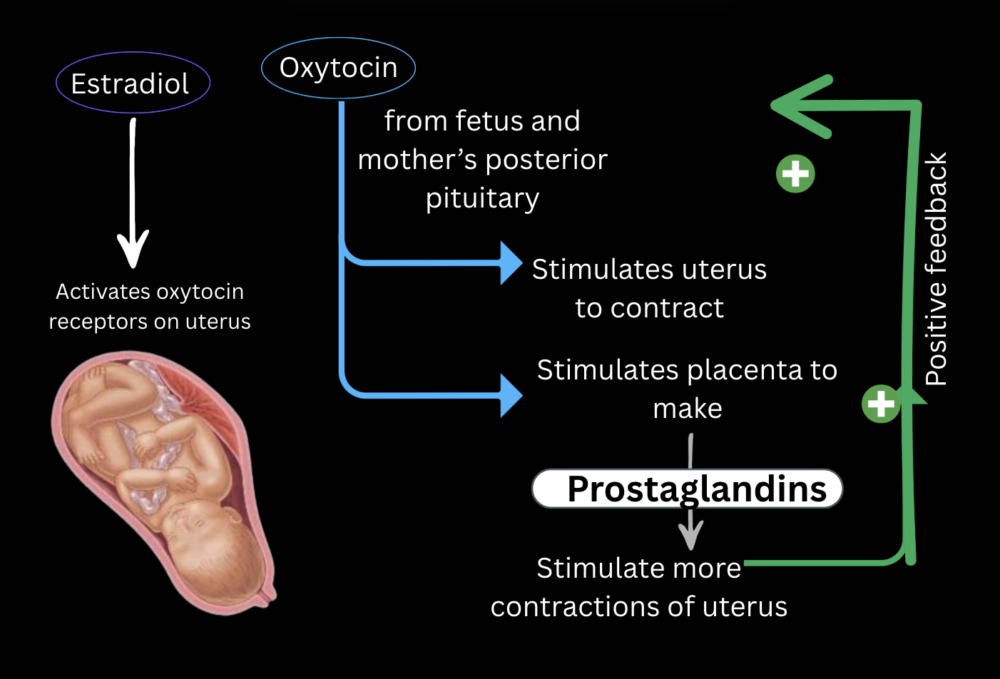
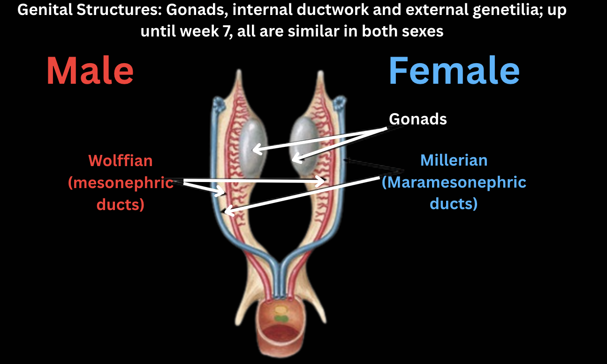

Early Development of the embryo:
- Once fertilisation has occurred, the zygote undergoes complex development within the maternal uterus. During copulation, millions of spermatozoa are released with semen.
- After ejaculation, semen temporarily coagulates, which may help retain it within the vaginal canal until the sperm reach the cervix.
- Soon after, anticoagulants liquefy semen, and sperm swim through the cervix and oviducts. Fertilisation, also called conception in humans, occurs when the egg fuses with a spermatozoan in the oviduct, leading to the formation of a zygote.
- After 24 h, the zygote begins a series of divisions without volume enhancement called cleavage, resulting in a solid ball of cells called the morula.
- After around 4 additional days, it becomes a blastocyst - a hollow sphere of cells. After a few more days, the embryo implants in the endometrium. The condition of carrying one or a few embryos in the uterus is called gestation (pregnancy).
Pregnancy and childbirth:
- In the first trimester, the implanted embryo secretes hormones that signal its presence to the mother's reproductive system. One embryonic hormone, human chorionic gonadotropin (hCG), acts like pituitary LH to keep the corpus luteum from disintegrating and causing a drop in hormone levels. Some of this hormone passes to the mother's urine, where it can be detected by tests.
- During its first 2-4 weeks of development, the embryo obtains nutrients directly from the endometrium. During this time, the outer layer of the blastocyst, called the trophoblast, interacts with the endometrium, helping to form a placenta. This disk-shaped organ contains both the mother's and the embryo's blood vessels.
- Exchange through the placenta supplies nutrients, provides immune protection and removes metabolic waste from the fetus. Sometimes the embryo splits during this stage, resulting in monozygotic or identical twins (non-identical twins are dizygotic and develop from separate gametes). The first trimester is the main period of organogenesis.
- Around the 8th week, all the main structures of the adult are present, although in rudimentary form. From this stage, an embryo can be called a fetus.
- At the end of the first trimester, the fetus is around 5 cm long. Meanwhile, a high progesterone level brings about changes in the mother: a mucus plug forms in the cervix to prevent infection, the maternal part of the placenta grows, the mother’s breasts and uterus get larger, and both reproductive cycles stop. The vast majority of women experience nausea.
- The second trimester - the fetus grows to around 30 centimetres. Fingernails, external sex organs and outer ears completely form. The mother may feel fetal activity as early as one month into the second trimester, and movements become visible 1-2 months later.
- Hormone secretion stabilises, hCG secretion declines, the corpus luteum deteriorates and placenta completely overtakes the production of progesterone, the hormone that maintains the pregnancy.
- The third trimester - the fetus grows to around 3-4 kg in weight and 50 cm in length. As the fetus grows, the uterus expands and the mother's organs become compressed and displaced, fetal movements may decrease due to lack of space.
- Childbirth begins with labour, a series of uterine contractions that push the fetus and placenta out of the body. Once labour begins, prostaglandin, estradiol, and oxytocin induce and regulate contractions in a positive-feedback loop. The labour has three stages: The thinning and dilation of the cervix; the expulsion of the fetus; the expulsion of the placenta.
- In response to changes in estradiol concentration after birth and the newborn suckling, the hypothalamus signals the anterior pituitary to secrete prolactin, which induces lactation.

Birth control, abortion, and fertility
There are many birth control types available, primarily to women, including birth control pills (synthetic estrogen and progesterone) and intrauterine devices (IUDs), as well as condoms, which also prevent the spread of sexually transmitted diseases, as the exchange of body fluids never happens.
The termination of an ongoing pregnancy is called an abortion. Spontaneous abortions (miscarriages) happen very frequently - in about a third of pregnancies, often before the mother is aware that she is pregnant. Access to a medical abortions varies dramatically around the world.
The most common type of such an abortion is a chemical one, involving a drug that blocks progesterone receptors in the uterus and works up to 7 weeks.
Not all people are fertile, capable of naturally conceiving. Age, health and environment can all play a role in both fertility and the fitness of the fetus. Among the leading causes of preventable infertility are sexually transmitted diseases. In modern times, there are many resources to help infertile people have a child, including in-vitro fertilisation or IVF.
Numerous fetal abnormalities and diseases can also be diagnosed during gestation, either by ultrasound imaging (structural) or genetic testing. The genetic tests are run on the blood in the mother’s system because small amounts of the fetus’s cells cross the placental barrier.
Sex Determination:
- The sex of a person is established at the moment of fertilisation. As the oocyte always carries the X chromosome (the mother's genotype is XX), the sex is determined by the spermatozoan, which can carry either the X or the Y chromosome.
- When two X chromosomes are present, only one remains functional. The other condenses to form a structure called a Barr body or sex chromatin. The structure can be observed with light microscopy.
- Many genetic defects arise from abnormal meiosis of fertilisation, some of which result in an abnormal number of sex chromosomes. Most prominent ones are XO, XXY, and XXX. Here, O denotes the absence of a chromosome. Such defects usually interfere with normal anatomical, intellectual, and functional sexual development.
- The majority of such people are sterile. These conditions tend to affect males more gravely. They are sometimes diagnosed with a method called karyotyping - visualisation of all chromosomes in the cell.
Sex Differentiation:
- The majority of people have the appearance, or phenotype, that matches their genotype. However, there are also various exemptions to the rule that arise because the presence of the Y chromosome directly influences only the formation of gonads. The rest of the differentiation depends on whether or not the testes secrete the necessary substances.
- The male and female gonads are derived from the same site, and embryos have identical structures up to 6 weeks of gestation. In the seventh week, the SRY (sex-determining region of the Y chromosome) gene is expressed in males, and the development of testes begins. In the absence of this gene, all embryos develop into females.
- The internal and external anatomy of the fetus is capable of expressing both phenotypes, and the undifferentiated reproductive tract includes a double duct system, composed of Wolffian and Müllerian ducts and a common opening together with the urinary system.
- In a normal development, one of the systems predominates and the other regresses (In males, the main system is Wolffian, in females, Müllerian). The selection of the tract depends on the presence or absence of testes, as they secrete testosterone and Müllerian-inhibiting substance (MIS) (or anti-Müllerian hormone (AMH)).
- Simultaneously, testosterone causes Wolffian duct differentiation into the characteristic male ducts. Externally and a bit later, under the influence of dihydrotestosterone, penis forms and the tissue near it fuses to produce the scrotum, into which testes will later descend.
- The failure to descend is called cryptorchidism and is frequent in fetuses with decreased androgen levels. Due to the inability to lower the body temperature near the testes, their sperm production is inhibited.

Written by Kotryna Mieldažytė